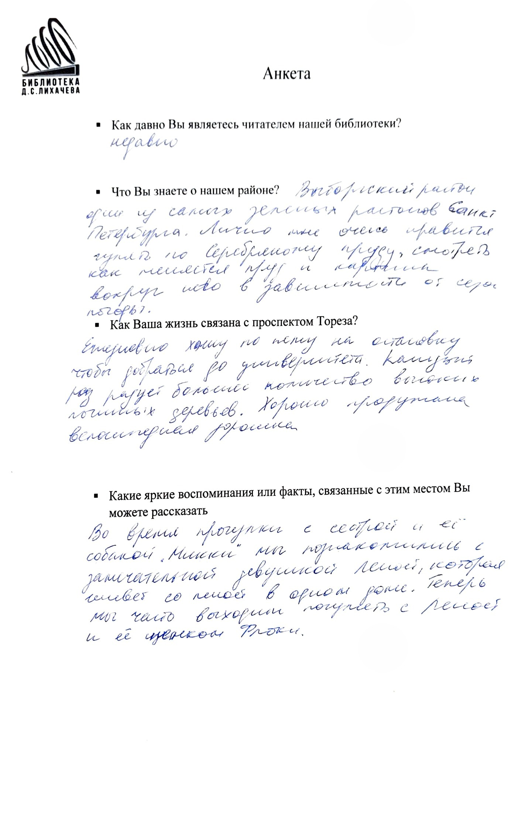
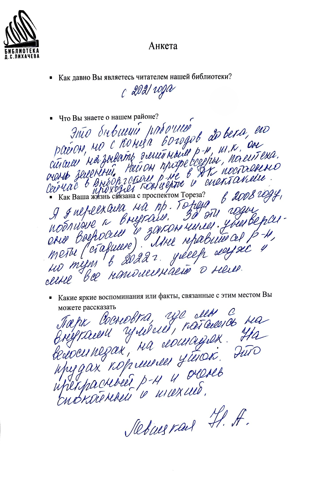
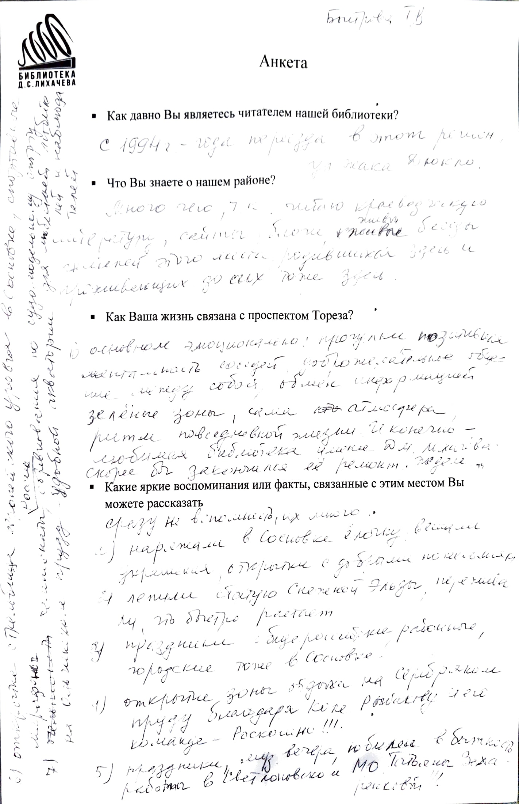
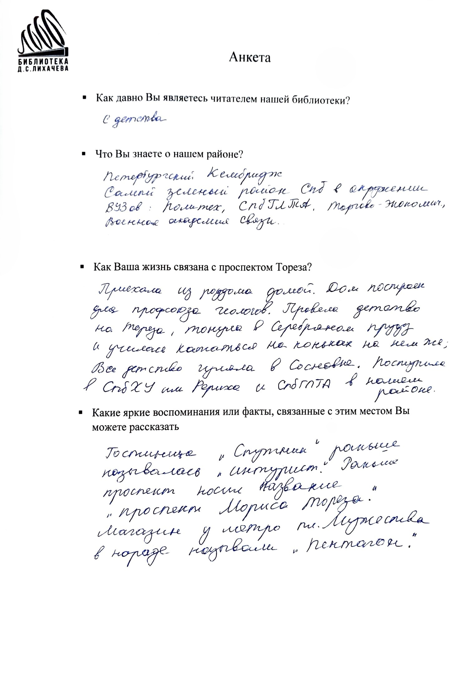
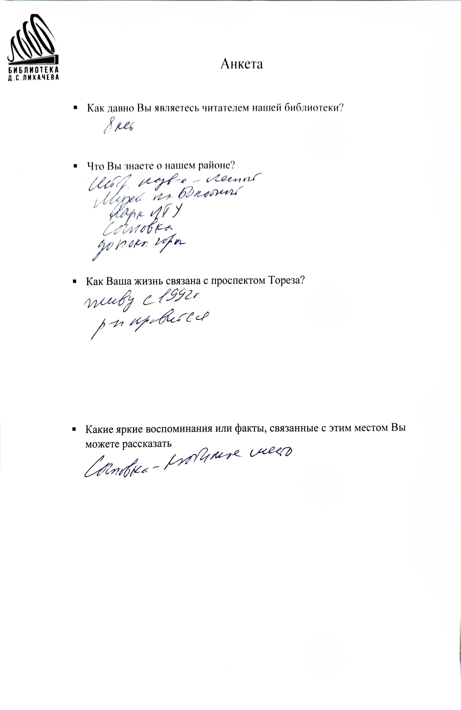
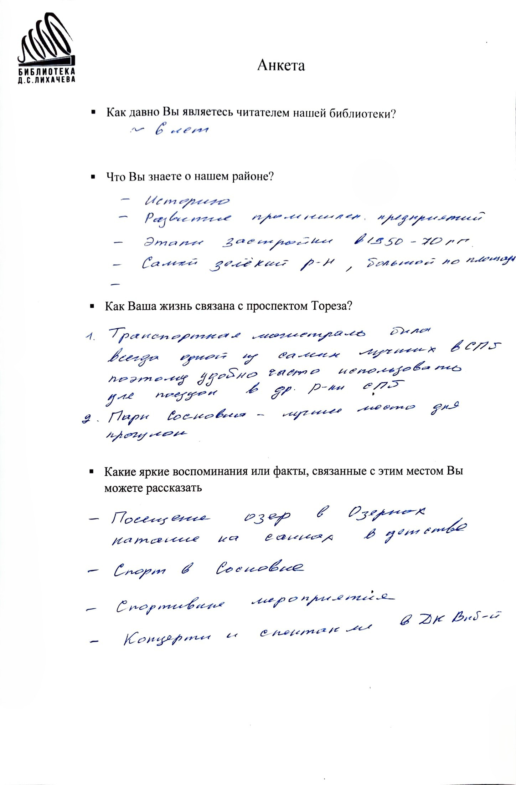
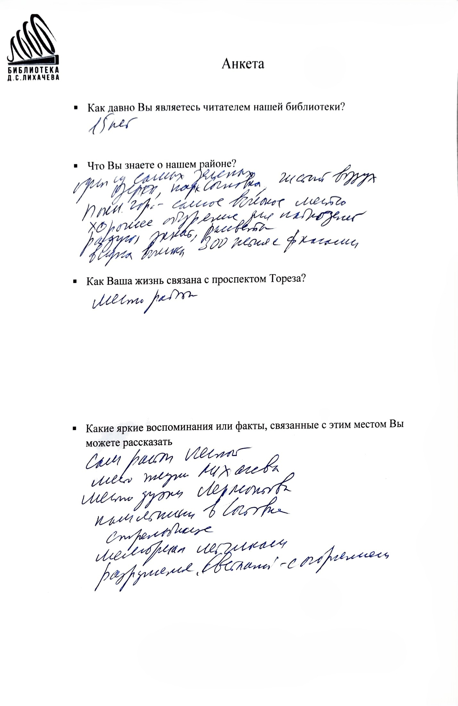
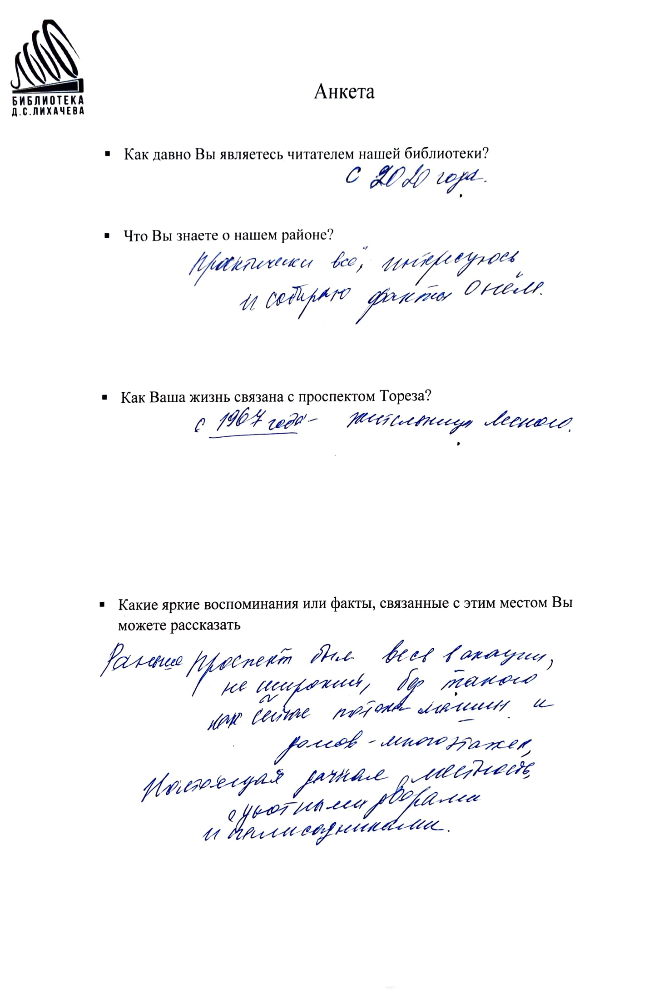
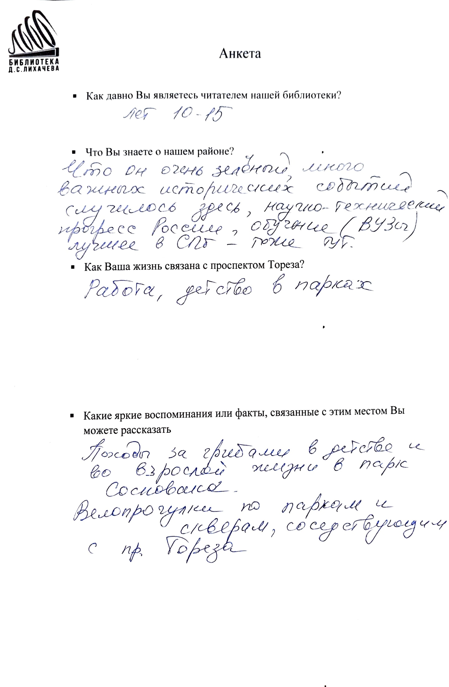

Подборка заполненных анкет с мнениями, воспоминаниями и отзывами жителей о проспекте Тореза. Нажмите на любую анкету, чтобы увеличить её, а затем воспользуйтесь кнопкой переворота для чтения расшифровки.








